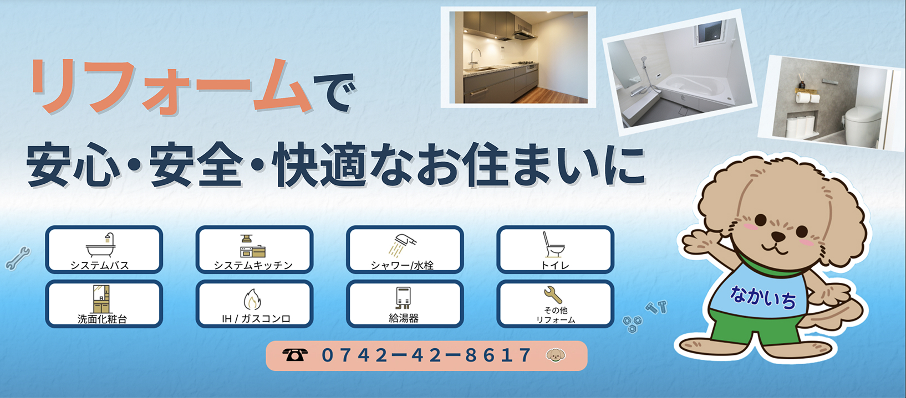
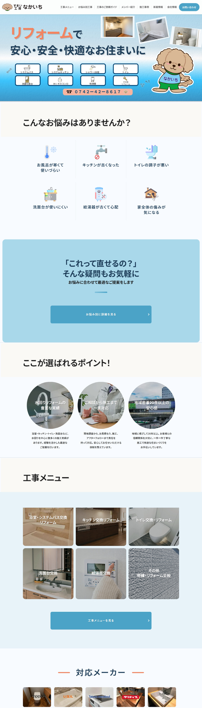
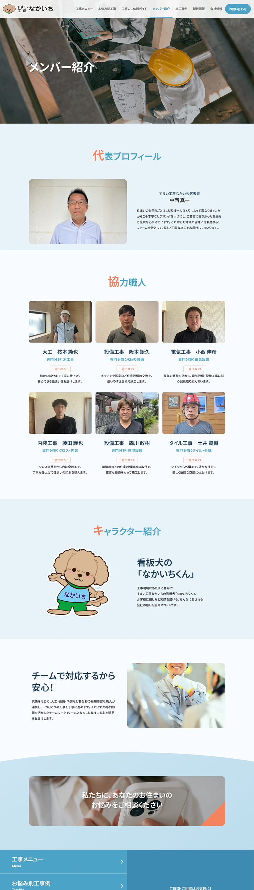
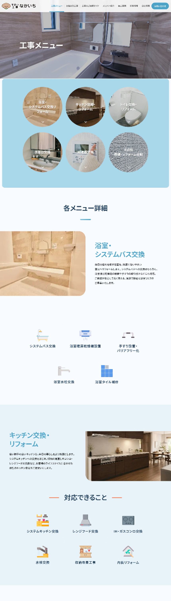
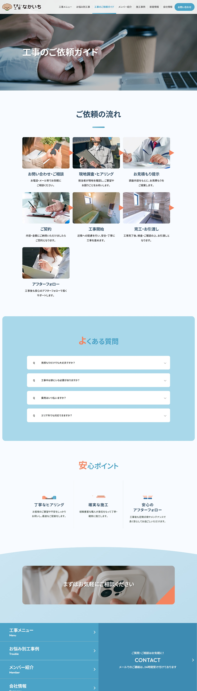

担当範囲
ワイヤーフレーム設計 / デザイン
コーディングディレクション
ライティング

ワイヤーフレーム設計 / デザイン
コーディングディレクション
ライティング
顧客からの新規問い合わせ増加
信頼感の向上
約1.5ヶ月
Figma / Photoshop
HTML / CSS / JavaScript
20年以上にわたり住宅設備に携わってきた経験と知識をしっかりと伝えながら、リフォームが初めてのお客様にも「ここなら気軽に相談できそう」と感じていただけるWebサイトを目指しました。
地域の皆様に親しみやすく、安心して相談していただけるリフォーム会社であることを伝えるため、温かみと清潔感を感じられるサイトデザインに仕上げました。派手さや高級感を前面に出すのではなく、「相談しやすさ」「誠実さ」「信頼感」を大切にし、水回りリフォームを得意とする地域密着企業としての強みが伝わる構成を意識しています。また、代表や職人の顔が見えるコンテンツや、お悩みから探せる導線を設けることで、リフォームが初めてのお客様でも安心してお問い合わせいただけるサイトを目指しました。
COLOR
#4BA3C7#A8D8EA#F4845F#F8FBFFTYPOGRAPHY
AaNoto Sans JP
可読性の高い書体を採用。




リフォームを初めて検討する方にとって、「自分の悩みにはどんな工事が必要なのか」を判断することは簡単ではありません。そこで、工事メニューから探す導線に加えて、「お風呂が寒い」「トイレがつまりがち」など、実際のお悩みから探せるページを用意。
20年以上の住宅設備経験やメーカーごとの豊富な製品知識に加え、打ち合わせから現場まで代表が一貫して対応できることが、なかいち様の大きな強み。
名刺に使われている「海と空」のイメージを引き継ぎ、ブルー・水色と白を基調に、オレンジをアクセントとして採用。爽やかで清潔感のある印象をベースに、角丸のパーツや柔らかなあしらい、看板犬「なかいちくん」を取り入れることで、堅すぎない親しみやすさを。